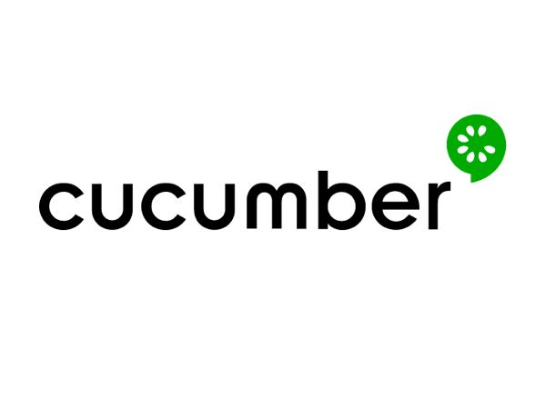
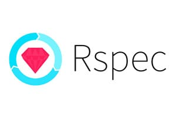

Stack
Tecnológico
Foco Atual
O foco do meu crescimento de carreira é baseado no conceito apresentado por várias empresas como Xebia, em que todos da equipe de desenvolvimento e testes terão que saber de várias áreas do conhecimento mas mantendo um foco ou especialização que no meu caso é teste de software. Então todos seremos engenheiros de software podendo pegar qualquer tarefa do grupo e fazê-la.
Esse conceito me move e orienta as novas stacks que estou desenvolvendo. Se ficou curioso quanto a isso leia meu artigo publicado no Medium sobre esse tema
QA no futuro hoje!.
A alegria que se tem em pensar e aprender faz-nos pensar e aprender ainda mais.
Aristóteles
STACK






Cursos Finalizados
| Nome | Descrição | Escola/Instituição |
|---|---|---|
| Inteligência Emocional | Saber lidar com pressão e stress, ter autoconfiança e autoconhecimento, ter controle emocional e capacidade de adaptação rápida, bem como trabalhar bem em equipe são habilidades que fazem total diferença no seu desempenho profissional. | Escola Conquer |
| Início Rápido em Teste de Software | Conceitos iniciais e gerais sobre Teste de Software. | Iterasys |
| RoboWeek 2a Edição (Robot Framework) | Curso de uma semana sobre Robot Framework, apresentando diversos testes com a ferramenta incluindo o mobile. | QA Ninja |
| Capybara: Automatize testes para aplicações Web com Ruby | Usando Capybara com Ruby para testes web. | QA Ninja |
| Semana de imersão em cypress | Curso de uma semana sobre cypress e vários outros conceitos de testes de software como Cucumber. | Agilizei |
| Lógica de programação com Dart | Curso de lógica de programação usando a linguagem Dart que é base para o Flutter. | balta.io |
| JIRA PARA TIMES ÁGEIS | Aula bastante ampla que demonstra os conceitos gerais do software Jira para testadores. | Canal Valor |
| Docker | Curso teórico e prático de Docker. | Certificação Linux ME |